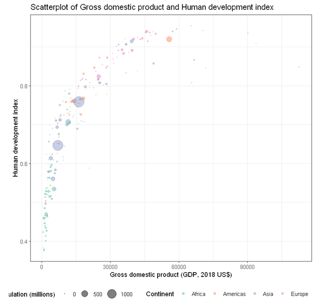

StatsNotebook
Follow our Facebook page or our developer’s Twitter for more tutorials and future updates
Scatterplot can be used to visualise the association between two numeric variables. StatsNotebook uses the geom_jitter function from the ggplot2 library to build scatterplot.
We use the built-in UNDP dataset in this example. This dataset can be loaded into StatsNotebook using instruction here. This is a dataset of 199 countries compiled from the United Nations Development Programme.
We will use the following three variables from this dataset
- HDI - Human Development Index in 2018
- GDP - Gross Domestic Product per capital in 2018
- Pop - Population (in millions) in 2018
- Continent - Continent
- Schooling - Expected years of schooling
In this example, we will build
Simple scatterplot
To build a simple scatterplot visualising association between two numeric variables (e.g. HDI and GDP),
- Click DataViz at the top
- Click Correlation
- Select Scatterplot from the menu
- In the Scatterplot panel, select HDI to Vertical Axis and GDP to Horizontal Axis.
- Expand the Scatterplot Setting panel and uncheck Add a fitted line (A line of best fit will be added to the plot by default).
- Click Code and Run
R codes
currentDataset %>%
ggplot(aes(y = HDI, x = GDP)) +
geom_jitter(alpha = 0.6, na.rm = TRUE)+
scale_fill_brewer(palette = "Set2")+
scale_color_brewer(palette = "Set2")+
theme_bw(base_family = "sans")+
theme(legend.position = "bottom")
Output from the above R codes

Bubble plot
To build a bubble plot visualising the association between two numeric variables (e.g. HDI and GDP), with point size determined by a third continuous variable (e.g. Population size) and points color-coded by a categorical variable (e.g. continent)
- Click DataViz at the top
- Click Correlation
- Select Scatterplot from the menu
- In the Scatterplot panel, select HDI to Vertical Axis, GDP to Horizontal Axis, Continent to Fill color, and Pop to Size.
- Expand the Scatterplot Setting panel and uncheck Add a fitted line (A line of best fit will be added to the plot by default).
- Click Code and Run
R codes
currentDataset %>%
drop_na(Continent, Pop) %>%
ggplot(aes(y = HDI, x = GDP, size = Pop)) +
geom_jitter(alpha = 0.5, aes(color = Continent), na.rm = TRUE)+
scale_size(range = c(0.1, 8))+
scale_fill_brewer(palette = "Set2")+
scale_color_brewer(palette = "Set2")+
theme_bw(base_family = "sans")+
theme(legend.position = "bottom")
Output from the above R codes

Adjusting bubble size
The size of the bubble can be changed by changing the following line
scale_size(range = c(0.1, 8))
The minimum point size is 0.1 and the maximum is 8. The following code changes the minimum to 0.3 and the maximum to 15.
scale_size(range = c(0.3, 15))
Output from the updated R codes
Scatterplot with line of best fit
To build a bubble plot visualising the association between two numeric variables (e.g. HDI and Schooling) with a line of best fit and points color-coded by a categorical variable (e.g. continent),
- Click DataViz at the top
- Click Correlation
- Select Scatterplot from the menu
- In the Scatterplot panel, select HDI to Vertical Axis, Schooling to Horizontal Axis, and Continent to Fill color.
- Expand the Scatterplot Setting panel and check Add a fitted line (A line of best fit will be added to the plot by default).
- Click Code and Run
R codes
currentDataset %>%
drop_na(Continent) %>%
ggplot(aes(y = HDI, x = Schooling)) +
geom_jitter(alpha = 0.6, aes(color = Continent), na.rm = TRUE)+
geom_smooth(method = "lm", se = TRUE, level = 0.95, na.rm = TRUE, show.legend = FALSE)+
scale_fill_brewer(palette = "Set2")+
scale_color_brewer(palette = "Set2")+
theme_bw(base_family = "sans")+
theme(legend.position = "bottom")
Output from the above R codes

Follow our Facebook page or our developer’s Twitter for more tutorials and future updates